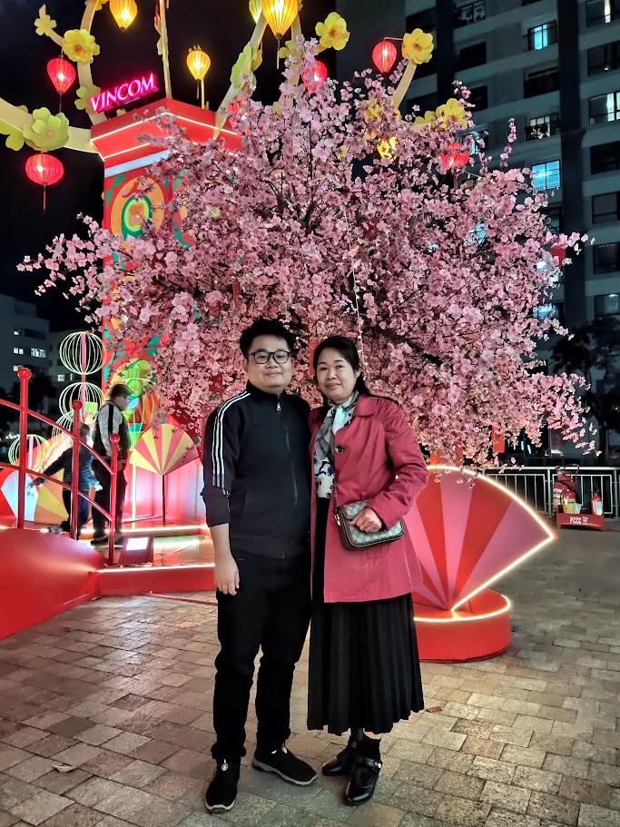
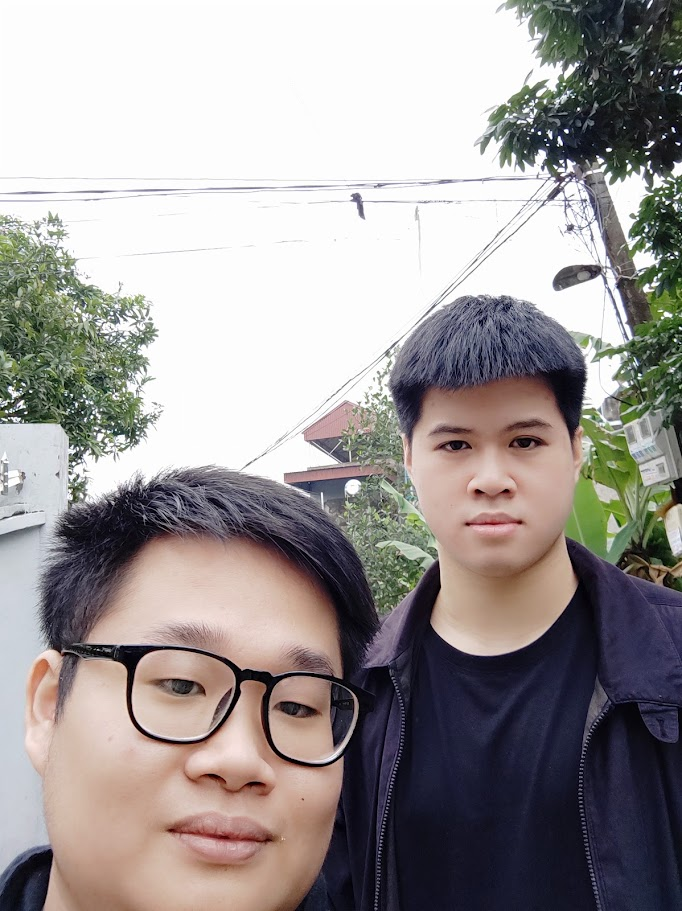

Xin chào mọi người, chào mừng đến với trang web của chúng tôi
Bạn yêu thích KPOP? Đây là điểm đến lý tưởng của bạn.
Từ khoảng những năm 2008-2009, làn sóng văn hóa Hàn Quốc đã du nhập vào Việt Nam thông qua phim ảnh hay âm nhạc, thời gian cũng như âm thực. Chúng đã tạo nên nhiều hứng thú và sự mến mộ với những thanh thiếu niên cuối thế hệ 198x và đầu 199x thời điểm đó. Sau mười mấy năm, làn sóng này không chỉ đã trở nên quen thuộc với các bộ phận người hâm mộ Việt Nam mà đã trở thành món ăn tinh thần cho nhiều người đặc biệt là những bạn trẻ. Với những bộ phim Hàn thì người trẻ ủng hộ rất nhiều, với mô típ lãng mạn cùng với hình ảnh cặp đôi yêu nhau ngọt ngào, các bạn nữ rất thích và mê đắm thể loại này. Phong cách thời trang của Hàn Quốc thì có lẽ đã ăn vào máu nhiều bạn trẻ thời nay với sự e thẹn ngại ngùng của các bạn nam, tóc bồng bềnh như lãng tử hay những làn da trắng như tài tử. Ẩm thực Hàn Quốc được đón nhận mạnh mẽ như món chả cá Hàn Quốc, lẩu bánh gạo, thịt nướng Hàn,... với các quán ăn đồ Hàn mọc lên rất nhiều, tiêu biểu là sự thành công lớn của chuỗi nhà hàng Dookki. Bên cạnh đó là video về thể loại asmr mukbang eating cũng ăn sâu vào nhiều người hâm mộ và có nhiều người Việt cũng làm theo thể loại này. Và đặc biệt nhất chính là âm nhạc Hàn Quốc...
Âm nhạc Hàn Quốc có lẽ chính là thành công lớn nhất của văn hóa Hàn vì không chỉ tác động đến Việt Nam mà còn đến với thế giới. Thời điểm 2008, 2009 là thời kỳ những nhóm nhạc thế hệ thứ hai bắt đầu vươn ra châu Á và Việt Nam là một trong những nước yêu thích nhất điều đó. Những nhóm nhạc như Big Bang, SNSD, T-Ara, DBSK, 2NE1... đã đi sâu vào tiềm thức của thế hệ cuối 8x, đầu 9x đó bởi những ca khúc có vũ đạo mạnh mẽ, âm nhạc cuốn hút. Sau thành công của thế hệ gen 2 đó, âm nhạc Kpop càng phổ biến không chỉ ở Việt Nam mà còn là trên thế giới, thế hệ thứ ba với những BTS, BlackPink, EXO, Twice, Red Velvet,... đã càng khẳng định sức hút mạnh mẽ của âm nhạc đến từ xứ sở kim chi này. Và cho đến hiện tại, những nhóm nhạc trẻ tiếp tục những di sản và phát huy chúng hơn nữa với các nhóm nhạc nữ TXT, SKZ, IVE, Newjeans, Le Sserafim, Aespa,... càng khẳng định thêm sự mạnh mẽ, sức hút, bền vững của âm nhạc nước này. Và tôi, NTN- là một fan Kpop lâu năm, sẽ đem đến cho các bạn những thông tin về các nhóm nhạc cũng như các ca sĩ Hàn Quốc hàng đầu mà bạn có thể chưa biết hoặc đã biết.
Xin chào, tôi là tên là Nguyễn Thành Nam, sinh ngày 3 tháng 10 năm 2001, tôi ở Hoàng Mai, Hà Nội. Cuộc sống của tôi trước đến giờ có lẽ cũng không có quá nhiều trải nghiệm cũng như sự đặc sắc. Cũng như những đứa trẻ khác, tôi sinh ra trong gia đình cũng không giàu nhưng cũng không nghèo, gọi là đủ ăn, cái tôi nhận được là tình cảm của bố mẹ đã dạy dỗ tôi nên người dù ông bà vốn không phải là những người thành đạt. Tôi học cấp một và cấp hai ở Yên Sở, trường ở làng tôi. Năm 2016, tôi thi đỗ trường Trung học Phổ Thông Hoàng Văn Thụ- ngôi trường là ước mơ của nhiều đứa trong khóa 2001 của tôi thời điểm đó và tôi đã làm được với con số 53 điểm. Tôi được học lớp chọn là A2 nhưng vì không học thêm nên trong quãng thời gian lớp 10, tôi học kém dù 9 năm trước đều học sinh giỏi. Năm lớp 11, tôi quyết định chuyển xuống A7 và đây là quãng thời gian tuổi học trò đáng quý nhất của tôi. Hai năm còn lại của cấp ba, tôi đã học rất tốt và có những người bạn tuyệt vời. Cho đến hiện tại, tôi vẫn nhớ họ và những gương mặt, giọng nói của từng người. Hết năm 12, tôi thi đỗ vào trường đại học Mở là nguyện vọng 2 về ngành ngân hàng, trước đó thì tôi thi trượt học viện Ngân Hàng khi thiếu một chút điểm. Tôi thời điểm đó mông lung vì mới 18 tuổi chập chững vào đời. Từ bé có thể nói tôi là một đứa khá hướng nội, nhút nhát nhưng càng lớn tôi càng mở rộng vốn giao tiếp của mình hơn. Năm 18 tuổi đó, tôi thử học với đứa bạn hồi cấp hai ở trường Cao đẳng Du Lịch Hà Nội nằm trên đường Hồ Tùng Mậu, gần đại học Thương Mại. Tôi theo học một thời gian nhưng cảm thấy không ổn cùng với tình hình kinh tế khó khăn nên tôi đã từ bỏ...
Sau khi quyết định nghỉ việc học ở trường cao đẳng, tôi quyết định đi thử nghiệm một số công việc để kiếm tiền trang trải cho bố mẹ. Tôi thời điểm đó đúng nghĩa là tờ giấy trắng, ngây thơ chập chững bước vào đời, chưa hiểu mùi đời như nào cũng như việc kiếm tiền khó khăn ra sao. Tôi lần lượt trải nghiệm các công việc như tư vấn khóa học tiếng Anh cho khách hàng tại Apax Leaders, nhân viên quầy rau tại siêu thị Mega Mart, thổi chai nhựa tại xưởng nhỏ, làm công việc sửa và cài máy in... những công việc tôi chỉ trải nghiệm trong thời gian ngắn mà thôi. Tôi buồn chán, suy nghĩ tiêu cực khi tự hỏi rằng mình nghỉ học liệu có phải quyết định đúng không, nhưng mà nghĩ về tiền bạc, tôi lại lo khi mà ba mẹ tôi không có nhiều để giúp tôi yên tâm. Cũng không biết do may mắn hay như nào, tôi có đứa bạn thân tên Dũng từ hồi lớp 10 đã giới thiệu tôi làm công việc online tại nhà cùng với anh ruột của ông ấy, tôi cũng khá hào hứng nhận nhưng cũng lo vì máy tính tôi ít sử dụng. Chiếc máy tính đầu tiên tôi được cằm trong tay là chiếc máy tính từ năm 2010, anh trai tôi đã mua và lâu không sử dụng, có thể nói là tôi cố gắng tiết kiệm cho bố mẹ để còn dùng cho việc khác. Tôi được anh ấy cho làm các dự án về dữ liệu của công ty Appen - một công ty có trụ sở bên Úc. Trong suốt khoảng thời gian tôi làm và cho đến hiện tại, tôi đã gắn bó với anh ấy khá lâu, hiểu về tính chất công việc, ưu điểm và khuyết điểm của chúng. Về ưu điểm thì điều tôi thích có lẽ chính là sự thoải mái khi công việc không gò bó, tự do làm tại nhà, mình tự quản lý thời gian của mình, miễn là cố gắng làm đủ số lượng công việc đã giao. Tôi cũng được trải nghiệm nhiều thể loại dự án khác nhau để training dữ liệu cho sản phẩm Meta AI, mỗi dự án tuy đơn giản nhưng cũng cần đọc kỹ để tránh sai sót. Những dự án tôi làm rất nhiều nhưng có vài dự án tôi nhớ như là: Phiên âm, đánh giá thể loại video, sao chép đường liên kết ảnh, chọn và dán nhãn wikipedia,... Làm lâu năm là thế nhưng công việc vốn không đều, có hôm có hôm không và tùy từng dự án nào trả lương cao lương thấp. Điều đó khiến tôi cảm thấy không có nhiều hi vọng về tương lai và quyết định tìm một hướng đi cụ thể hơn.
Trong thời điểm giãn cách vì Covid-19, cùng với đó là khá chán vì lượng công việc online ít ỏi, tôi quyết định thử học một ngôn ngữ mới mong rằng sẽ giúp mình có tương lai ổn hơn. Cũng vì bài toán kinh tế, tôi cũng chẳng dám xin tiền ba mẹ để học ở trường hay trung tâm, tiền tôi làm được thì cũng đưa ba mẹ tiêu vì không đủ, còn chút ít tiền thì tôi đã tự lên mạng học qua các bài giảng video online tại nhà của Dũng Mori. Tôi đã học rất chăm chỉ, có thời gian rảnh là tôi học tiếng Nhật. Những bài giảng của trung tâm thầy Dũng đều là dạng video đã quay từ trước, từ chữ Hán, từ vựng, ngữ pháp, kaiwa. Tôi học và ghi chép cẩn thận. Bên cạnh đó, tôi cũng lên những trang mạng, nguồn Youtube từ những kênh tiếng Nhật khác, thậm chí là xem những video free của Riki Nihongo để học. Năm 2022, tôi quyết định đăng ký thi N3 tiếng Nhật sau quãng thời gian mình tự học ở nhà, để kiểm chứng xem khả năng của mình đến đâu. Kỳ thi tôi tham dự là JLPT, một chứng chỉ rất nổi của Nhật và được nhiều nơi công nhận. Tôi lo lắng rằng mình trượt nhưng tôi đã đủ đỗ N3 với số điểm sát nút. Hăng máu nên tôi quyết thi luôn N2 vào tháng 7 năm 2023, 7 tháng sau khi đỗ N3. Lần này, tôi thi thậm chí còn làm tốt hơn khi đỗ N2 một cách an toàn. So với nhiều người, việc tự học và đỗ được N2 quả thực không dễ và tôi cũng cảm thấy vui vẻ phần nào khi mà đỗ được mức độ này khi tự học cũng như không trượt lần nào. Tôi cũng rất hào hứng với tấm bằng N2 dự định sẽ đi xin việc nhưng mọi thứ còn nhiều chông gai. Tôi vốn không sang Nhật vì kinh tế, mà giờ làm giáo viên cũng khó khi chứng chỉ cả kinh nghiệm là không đủ...
Cũng như nhiều người khác, đều có suy nghĩ rằng IT là vua của mọi nghề. Tôi thì không đến mức như thế, cơ mà tôi cũng thích máy tính tại đã làm quen với nó 4 năm rồi, cộng hưởng với việc tự học tiếng Nhật, tôi quyết định học Code Website và sau những kinh nghiệm học, tôi làm nên website này cho mọi người cùng theo dõi Kpop.
Tôi biết Kpop từ những năm 2010, 2011 ở thời kỳ thế hệ thứ hai bắt đầu hoạt động năng nổ. Thời điểm đó thì không có mạng xã hội, không có internet, điện thoại còn là thứ xa xỉ. Tôi nghe nhạc Hàn Quốc thông qua kênh truyền hình như MTV, các bài hát cứ chạy và trong tiềm thức đưa tôi biết đến các nhóm nhạc như SNSD, Big Bang, Beast, EXO, Miss A,... và đặc biệt nhất là T-ara, tôi cực mê thứ âm nhạc của họ như ca khúc Roly Poly, Sexy Love, Day By Day,... Tuy nhiên thời điểm đó tôi không có hâm mộ hẳn mà chỉ có nghe nhạc thôi. Năm 2020, sau khi nghe tin bạn tôi mất, tôi vô tình nghe ca khúc How You Like That của BlackPink vì bạn tôi vốn là người thích Lisa. Dần dần, tôi tự nhiên mê BlackPink qua thứ âm nhạc, sự dễ thương, chương trình BlackPink House, tôi chính thức làm fan Kpop từ đó giờ. Bây giờ, tôi không chỉ mến mộ BlackPink mà tôi còn thích Twice, Iz*one, Le Sserafim và biết đến rất nhiều những nhóm nhạc Kpop khác.
Lần đầu biết đến Red Velvet vào năm 2021, tôi si mê nhóm bởi thứ âm nhạc ma mị, phong cách Nhung Đỏ cuốn hút, visual Joy và Irene đỉnh của chóp.
Lần đầu biết đến Twice vào năm 2021, tôi thích nhóm bởi phong cách nhẹ nhàng, nữ tính nhưng gợi cảm, chuẩn gu bạn gái. Mina là bias của tôi.
Lần đầu biết đến Twice vào năm 2023, dù nhóm tan rã nhưng tôi vẫn mê nhóm ở thời điểm hiện tại vì rất giống Twice. Tôi mê các thành viên lắm.
Lần đầu biết đến BlackPink vào năm 2016, tôi thích nhóm bởi phong cách nhẹ nhàng, nữ tính, âm nhạc hay. Kim Jisoo là bias của tôi.
Lần đầu biết đến Twice vào năm 2019, tôi thích nhóm bởi nhìn khá dị, dù không chuẩn gu tôi lắm nhưng bướng là tôi thích. Shin Ryujin là bias của tôi.
Lần đầu biết đến Twice vào năm 2020, tôi thích nhóm bởi sự quyến rũ chết người từ các thành viên, tôi mê lắm. Tất cả đều là bias của tôi.
Lần đầu biết đến Twice vào năm 2021, tôi thích nhóm bởi phong cách nhẹ nhàng, nữ tính nhưng gợi cảm, chuẩn gu bạn gái. Kim Gaeul là bias của tôi.
Lần đầu biết đến Le Sserafim vào năm 2022, tôi thích nhóm bởi phong cách nhẹ nhàng, nữ tính nhưng gợi cảm, chuẩn gu bạn gái. Cả nhóm tôi đều thích vì là gu của tôi.

Tiếng Nhật là ngôn ngữ khá là khó nhưng hãy chăm chỉ ắt sẽ thành công.
Sau những năm tháng học tiếng Nhật, tôi không chỉ biết được một ngôn ngữ mới mà cũng biết được những điều hay, cái đẹp của con người Nhật Bản.

Học lập trình web hay IT chưa bao giờ là dễ dàng cả, khi mà đòi hỏi sự chăm chỉ, kiên nhẫn, quyết tâm.
Sau những năm tháng học tiếng lập trình, tôi mở rộng được cái nhìn của mình, rèn ý thức kỷ luật cũng như nỗ lực hơn để làm ra những sản phẩm.
Làm một công việc từ xa tại nhà cũng rất tiện nhưng kèm với đó là lương thấp và hơi cô đơn.
Sau những năm tháng làm việc, tôi hiểu được giá trị đồng tiền, những khó khăn nhưng cũng học được cách tự rèn bản thân linh hoạt, sắp xếp thời gian.